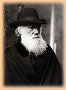
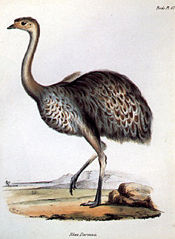

|
 For Christians, and many other religion followers, Darwin's books had a radical new idea. Others opposed evolution, because it conflicted with their religious thought. Darwin was influenced by ideas of other evolutionists from the late 1700's, and his granddad, Erasmus Darwin. He was often called the Father of evolution, and was named after his Uncle. Darwin thought his voyage on the H.M.S. Beagle the most important happening in his life. It was very controversial for Darwin. His theory said that the organisms of today are resulted from billions of years of evolving. It implied that humans, like every other animal in the world, had evolved from muck. The idea was not pleasing. Plus, it conflicted with the idea that each and every animal was perfect. This was one of the facts that had helped prove there was a god. |